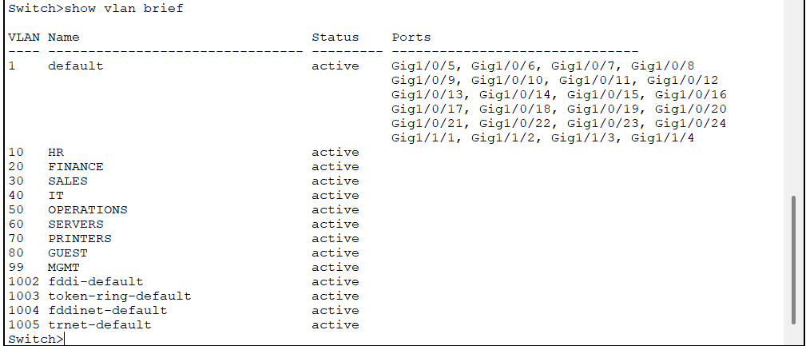
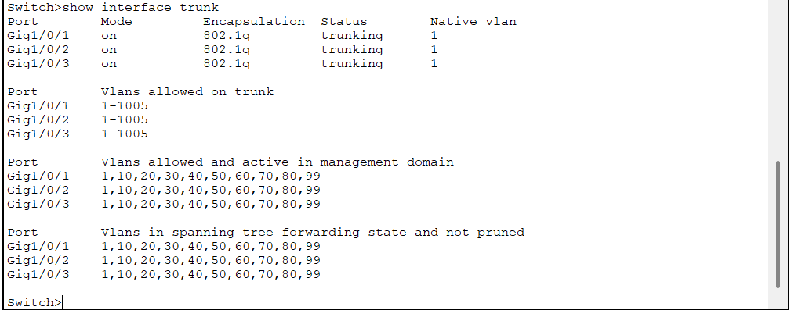
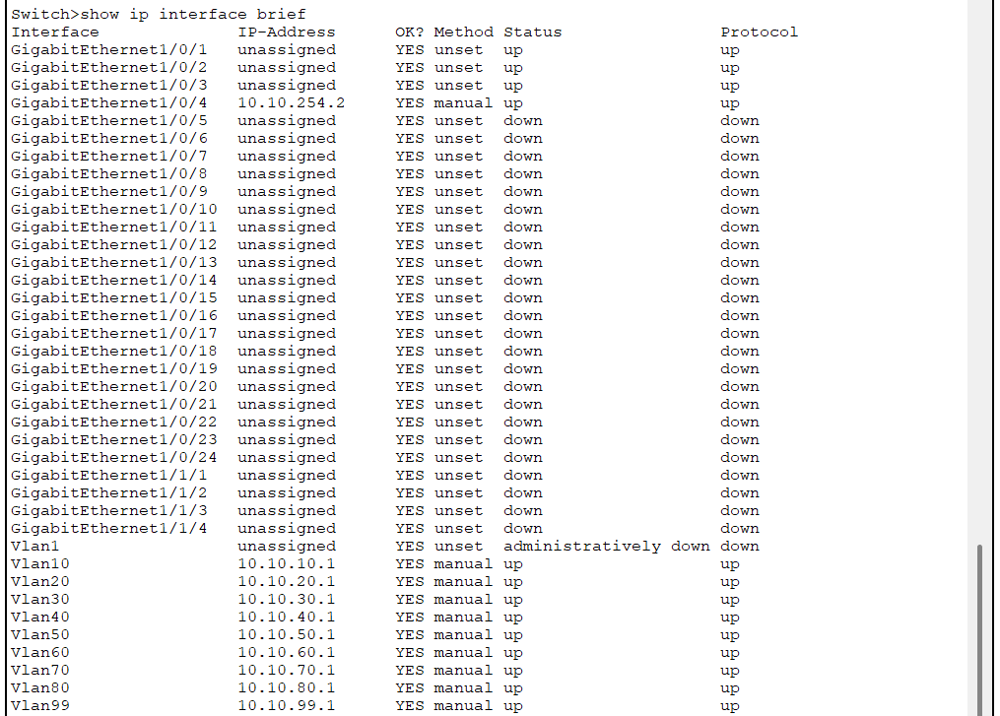
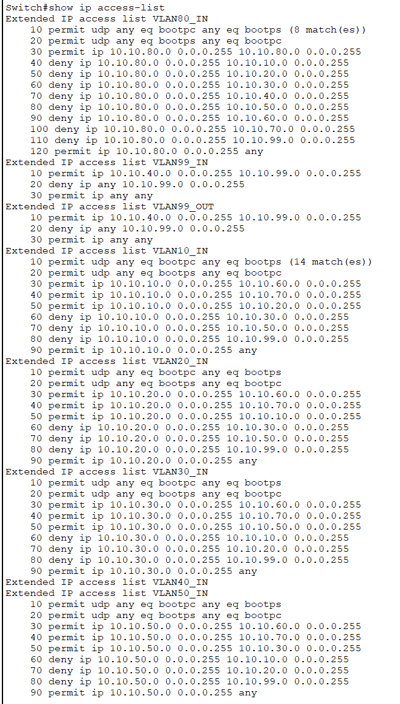

Quick Facts
- Routing: Layer 3 core switch with SVIs and IP routing
- Segmentation: Department VLANs plus servers, printers, guest, and management
- Services: DHCP, DNS, intranet web, and file services in a dedicated server VLAN
- DHCP Delivery: DHCP relay using
ip helper-address - Security: ACLs enforce controlled inter-VLAN access and guest isolation

Overview
This Packet Tracer project models a medium-sized business network with department VLANs, a Layer 3 core switch providing inter-VLAN routing via SVIs, and centralized services hosted in a dedicated servers VLAN. ACLs enforce segmentation with controlled access between approved departments and restricted access to the management VLAN.
VLANs and Addressing
| VLAN | Name | Subnet | Gateway |
|---|---|---|---|
| 10 | HR | 10.10.10.0/24 | 10.10.10.1 |
| 20 | Finance | 10.10.20.0/24 | 10.10.20.1 |
| 30 | Sales | 10.10.30.0/24 | 10.10.30.1 |
| 40 | IT | 10.10.40.0/24 | 10.10.40.1 |
| 50 | Operations | 10.10.50.0/24 | 10.10.50.1 |
| 60 | Servers | 10.10.60.0/24 | 10.10.60.1 |
| 70 | Printers | 10.10.70.0/24 | 10.10.70.1 |
| 80 | Guest | 10.10.80.0/24 | 10.10.80.1 |
| 99 | Management | 10.10.99.0/24 | 10.10.99.1 |
Centralized Services
| Service | IP | Notes |
|---|---|---|
| DHCP | 10.10.60.10 | Delivered across VLANs via DHCP relay |
| DNS | 10.10.60.11 | Internal name resolution |
| Web (Intranet) | 10.10.60.12 | Internal HTTP service |
| File Server | 10.10.60.13 | Centralized file access |
Access Control and Segmentation
Inter-VLAN access is restricted by default and only permitted where required by business need. Guest traffic is isolated from internal networks while still receiving basic connectivity services.
- Guest VLAN blocked from internal VLANs
- Guest still allowed DHCP and basic connectivity services
- HR allowed to reach Finance for workflow needs
- Sales allowed to reach Operations
- Only IT allowed to reach Management VLAN resources
Evidence




Validation
- DHCP leases issued correctly per VLAN
- DNS resolves intranet hostname and HTTP access succeeds
- Guest receives DHCP but cannot access internal VLANs
- Approved inter-department access works as intended
- Restricted paths fail as intended